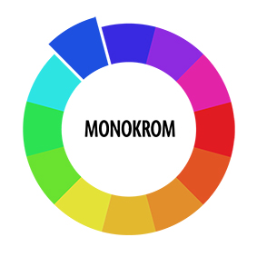

Eksponeringstrekanten
For at tage præcis det billede, som man selv har i tankerne, er det vigtigt at benytte sig af eksponeringstrekanten. Eksponeringstrekanten består af tre indstillinger på kameraet; Lukkertid, blænde og ISO. Disse tre indstillinger er altafgørende ift hvilket resutalt man får, da instillingerne giver et hav af muligheder.
Lukkertid
Lukkertid er noget man kan indstille på sit kamera. Man indstiller på, hvor lang tid det tager for lukkeren at lukke, altså hvor lang tid sensoren på kameraet får lys. Hvis der er en lang lukkertid lukker man meget lys ind på sensoren og billedet tages over længere tid. Dette betyder at ting i bevægelse bliver sløret ved en lang lukkertid. Omvendt bliver ting i bevægelse frosset fast ved en kort lukkertid. Ved en kort lukkertid får sensoren ikke lige så meget lys, da billedet bliver taget hurtigt.
Lang lukkertid = Sløring ved bevægelse + lysere billede
Kort lukkertid = Fryser bevægelse + mørkere billede
Blænde
Blænden på kameraet er en rund cirkel inde i kameraet, som man kan regulere på. Man indstiller på blændeåbningen. Det betyder at man for det første lukker meget lys ind ved en stor åbning/et lavt blændetal. Hvor man derimod ved en lille blændeåbning/højt blændetal lukker mindre lys ind. Blænden giver også mulighed for at indstille på sløring i billedet.
Lavt blændetal = Meget baggrundssløring + lysere billede
Højt blændetal = Mindre baggrundssløring + mørkere billede
ISO
ISO er en indstilling, som bestemmer hvor lyst billedet bliver. Hvis ISO-tallet er højt, bliver billedet lysere, men også mere grynet at se på. Hvis ISO-tallet er lavt billeder billedet mere "glat", men mørkere.
Patch Tool
Patch tool er et værktøj i Photoshop, som ”klipper” billedet ud, som man gerne vil have det. Dvs at man sætter nogle punkter, som Photoshop binder sammen, for at klippe den form ud, som man ønsker.
Her er et eksempel på brug af patchtool:
Layers
Layers gør det muligt at arbejde i flere lag. Det betyder at hver gang man laver nye ændringer i et billede, kan man gøre det i et nyt lag. Det giver dig muligheden for at ”tænde og slukke” for laget, hvis du vil se ændringen eller hvis du ikke vil have den alligevel.
Content aware fill
Content aware fill giver mulighed for at fylde et bestemt område, eller hele området med en farve, mønster eller ”afhænger af indholdet”.
farver
Når der er tale om farver, er der egentlig tale om lys. I 1600 tallet blev et eksperiment lavet af Isaac Newton, som viste at alle farver kommer fra lys, som bliver brudt af en prisme. Her fandt hn også ud af hvilke farver, som var primærfarver, da man ikke kan blande andre farver, for at få de tre primærfarver; blå, gul og rød. Når der er tale om sekundære farver, er det farver, som blandes af to af primærfarverne. Tertiære farver blandes af en primær-og en sekundærfarve.
- Carsten Bogner ”farvelaere.pdf”
Farvesymbolik
Farver symboliserer hver især noget. De kan fx bruges til at fange menneskers opmærksomhed, eller symbolisere noget roligt. Det bliver brugt hver eneste dag. Det kan dog være forskelligt fra kultur til kultur hvad hvilke farver symboliserer, og der er også forskel på hvordan mænd og kvinder tolker de forskellige farver.
FARVESYSTEMER
Som multimediedesigner skal man vide om de forskellige farvsystemer. Man skal veksle mellem digital grafik og tryksager, der er 3 som man skal kunne.
-CMYK
-RGB
-HSB
RGB
RGB står for Red Green Blue.
Det er et additiv farvesystem, og det betyder at man kan tilføje lys. Det bruger man til digital grafik = computere og tv.
CMYK
CMYK står for Cyan Magenta Yellow Key og det er subtraktivt farvesystem, som betyder, at man trækker lys ud og det kan bruges til tryksager som t-shirts og plakater.
HSB
HSB står for Hue Saturation Brightness og betyder Kulør, mætning og lyshed. Kulør er en variation af en farve, hvor mætning er med til at bestemme hvor meget gråtone der blandesi, og til slut med lyshed, blander man hvid eller sort i. Så på den måde kan man opnå den ønskede farve.
Farvesammensætning
Når man skal designe en hjemmeside, skal man vide noget om farvesammensætning. Dette er vigtigt, for at gøre brugeroplevelsen god. Når man sætter farverne sammen, er det også vigtigt at vide lidt om brugeren, for at sammensætte de korrekte farver, som falder i brugerens smag.
Der findes to metoder til farvesammensætning; analog og triader.
Analog består af én farve, med et bredt spektrum.
Triader består af tre farver, som findes 120 grader fra hinanden i farvecirklen
Herunder ses farvecirklerne:
Monokrom
Her er der tale om en enkel farve, som justeres alt efter lysstyrke og farvemætning.

Komplementær
Her er der tale om farver, som findes over for hinanden i farvecirklen.
Split Komplementær
Her er der tale om farver, som findes over for hinanden i farvecirklen, med et bredere spektum
Triader
Her er der tale om tre farver, som er 120 grader fra hinanden i farvecirklen.
Tetriader
Tetriader omtales også dobbeltkomplementær. Der er tale om fire farver i par, som er komplementære.
Webdesign
Når man designer en hjemmeside er det helt sikkert, at man kommer til at vælge mindst tre farver; baggrund, grundfarven til webdesignet og accentfarve.
Man kan sagtens tilføje flere farver, hvis dette lyster.
- Carsten Bogner ”farvelaere.pdf”
Typografi
bla bla Typografi
Gestaltlovene
Gestaltlovene er en række designprincipper, som bliver benyttet i designprocessen af en hjemmeside:
- Nærhed (proximity) denne bliver benyttet til at placere ting, som høre sammen, tæt på hinanden.
- - Lighed (similarity) Dette er når man benytter de samme ting/figurer på hjemmesiden.
- - Lukkkethed (closure).
Kilde gestaltlovene
{kind=link}
{kind=link}
{kind=link}
{kind=link}